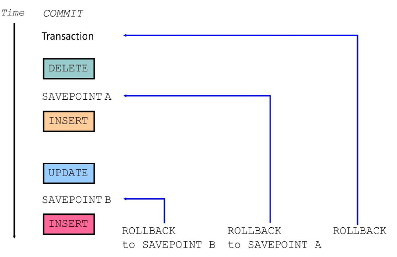
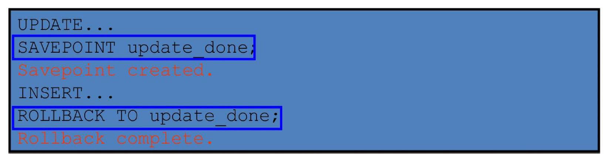
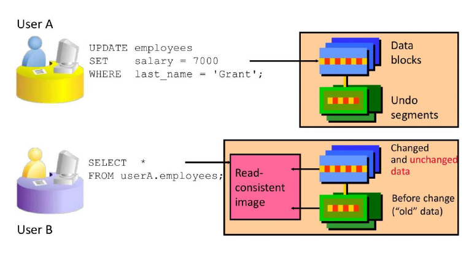

Transactions
Database Transactions
-
A database transaction consists of one of the following:
- DML statements that constitute one consistent change to the data
- One DDL statement
- One data control language (DCL) statement
-
Begins when the first DML SQL statement is executed.
- A transaction ends with one of the following events:
- A COMMIT or ROLLBACK statement is issued.
- A DDL or DCL statement executes (automatic commit).
- The user exits SQL*Developer (or tool) normally (implicit commit in many tools).
- The system crashes (changes lost — rollback on restart).
Advantages of COMMIT and ROLLBACK Statements
With COMMIT and ROLLBACK statements, you can:
- **Ensure data consistency**
All changes in a transaction succeed together or are undone completely (atomicity).
- **Preview data changes before making changes permanent**
Execute DML statements, query the results, and decide whether to commit or rollback.
- **Group logically related operations**
Treat multiple DML statements as a single logical unit of work.
Controlling Transactions

Rolling Back Changes to a Marker
- Create a marker in a current transaction by using the SAVEPOINT statement.
- Roll back to that marker by using the ROLLBACK TO SAVEPOINT statement.

Implicit Transaction Processing
-
An automatic commit occurs under the following circumstances:
- DDL statement is issued
- DCL statement is issued
- Normal exit from SQL Developer, without explicitly issuing COMMIT or ROLLBACK statements
-
An automatic rollback occurs under an abnormal termination of SQL Developer or a system failure.
State of the Data Before COMMIT or ROLLBACK
- The previous state of the data can be recovered.
- The current user can review the results of the DML operations by using the SELECT statement.
- Other users cannot view the results of the DML statements by the current user.
- The affected rows are locked; other users cannot change the data in the affected rows.
State of the Data After COMMIT
After issuing a COMMIT:
- Data changes are made permanent in the database.
- The previous state of the data is permanently lost.
- All users can view the results.
- Locks on the affected rows are released; those rows are available for other users to manipulate.
- All savepoints are erased.
Committing Data
Step 1: Make the Changes
DELETE FROM employees
WHERE employee_id = 99999;
INSERT INTO departments
VALUES (290, 'Corporate Tax', NULL, 1700);
Step 2: Commit the Changes
State of the Data After ROLLBACK
- Discard all pending changes by using the ROLLBACK statement:
- Data changes are undone.
- Previous state of the data is restored.
- Locks on the affected rows are released.
DELETE FROM test; -- ups!, it's a mistake
-- 25,000 rows deleted.
ROLLBACK; -- correct the mistake
-- Rollback complete.
DELETE FROM test WHERE id = 100; -- it's ok
-- 1 row deleted.
SELECT * FROM test WHERE id = 100;
-- No rows selected. (row successfully removed)
COMMIT; -- make it permanent
-- Commit complete.
Statement-Level Rollback
- If a single DML statement fails during execution, only that statement is rolled back.
- The Oracle server implements an implicit savepoint.
- All other changes (previous successful statements in the transaction) are retained.
- The user should terminate transactions explicitly by executing a COMMIT or ROLLBACK statement.
Read Consistency
- Read consistency guarantees a consistent view of the data at all times.
- Changes made by one user do not conflict with changes made by another user.
- Read consistency ensures that on the same data:
- Readers do not wait for writers
- Writers do not wait for readers
